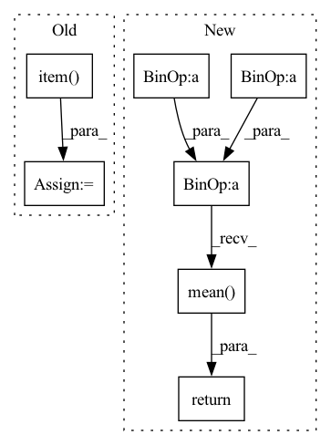

Pattern ID :24599
Before Change
y_pred = self.model(ref_x)
criterion = MSLELoss()
model_score = criterion(y_pred, y).item()
return model_score
After Change
mse loss between predicted and true cell-type proportions.
pred = pred/ torch.sum(pred,1, keepdims=True).clamp(min=1e-6)
true_prop = true_prop/ torch.sum(true_prop,1, keepdims=True).clamp(min=1e-6)
loss = ((pred - true_prop)**2).mean()
return loss.detach().item()
In pattern: SUPERPATTERN
Frequency: 3
Non-data size: 7
Instances Fragment ID: 76356813
Project Name: omicsml/dance
Commit Name: a855ce69879f38203fcf3b25231fa74cfaf3ae05
Time: 2022-08-14
Author: venegas5@msu.edu
File Name: dance/modules/spatial/cell_type_deconvo/spatialdecon.py
M Class Name: SpatialDecon
N Class Name: SpatialDecon
M Method Name: score(3)
N Method Name: score(3)
M Parent Class:
N Parent Class:
M File Name: dance/modules/spatial/cell_type_deconvo/spatialdecon.py
N File Name: dance/modules/spatial/cell_type_deconvo/spatialdecon.py
M Start Line: 183
M End Line: 189
N Start Line: 207
N End Line: 211
Before Change
bin_low = bins[i]
bin_high = bins[i+1]
d1 = abs(bin_low - target.item())
d2 = abs(bin_high - target.item() )
output = torch.tensor(output,dtype=torch.float32, device=self.device,requires_grad=True)
target = torch.tensor(target,dtype=torch.float32, device=self.device, requires_grad=True)
bin_high = torch.tensor(bin_high,dtype=torch.float32, device=self.device, requires_grad=True)After Change
k =1
loss = greater_mask * torch.max(torch.tensor(k* torch.log(1+ torch.abs(outputs - targets)),dtype=torch.float32, device=self.device, requires_grad=True), (outputs - bin_high)) + lesser_mask * torch.max(torch.tensor(k* torch.log(1+ torch.abs(outputs - targets)),dtype=torch.float32, device=self.device, requires_grad=True), (bin_low - outputs))
return loss.mean()
Fragment ID: 76356829
Project Name: atmacvit/bincrowd
Commit Name: acb86088468ea073cb8983f27fa97db906f87933
Time: 2021-07-20
Author: khamkarmansi@gmail.com
File Name: optimization/log_loss.py
M Class Name: Log_Loss
N Class Name: Log_Loss
M Method Name: forward(5)
N Method Name: forward(4)
M Parent Class: Module
N Parent Class: Module
M File Name: optimization/log_loss.py
N File Name: optimization/log_loss.py
M Start Line: 12
M End Line: 39
N Start Line: 9
N End Line: 30
Before Change
B_pred = self.nnls_reg2(H_profile)
criterion = nn.MSELoss()
model_score = criterion(B_pred, B).item()
return model_score
After Change
print(pred.shape)
print(true_prop.shape)
pred = pred/ torch.sum(pred, 1, keepdims=True).clamp(min=1e-6)
true_prop = true_prop/ torch.sum(true_prop, 1, keepdims=True).clamp(min=1e-6)
loss = ((pred - true_prop)**2).mean()
return loss.detach().item()
Fragment ID: 76356815
Project Name: omicsml/dance
Commit Name: 954e7fcd40b28b359d702e5d3da454b1a7c2ab58
Time: 2022-08-14
Author: venegas5@msu.edu
File Name: dance/modules/spatial/cell_type_deconvo/spotlight.py
M Class Name: SPOTlight
N Class Name: SPOTlight
M Method Name: score(3)
N Method Name: score(4)
M Parent Class:
N Parent Class:
M File Name: dance/modules/spatial/cell_type_deconvo/spotlight.py
N File Name: dance/modules/spatial/cell_type_deconvo/spotlight.py
M Start Line: 264
M End Line: 289
N Start Line: 308
N End Line: 314